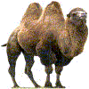

"The four llamas and two camels are camelids tend to be large and are strictly herbivorous. Camelids differ from ruminants in several ways. They have a three- chambered rather than a four-chambered digestive tract; an upper lip that is split in two with each part separately mobile; and an isolated incisor in the upper jaw. They have long legs that, because they lack tensor skin to bridge between thigh and body, look longer still. (from Wikipedia)".
 |
Camelid comparison | |||
|---|---|---|---|---|
| # of humps | Indigenous region | Spits? | Produces wool? | |
| Camel | 2 | Desert regions of Africa and Asia | Yes | Yes |
| Llama | 1 | Andes Mountains of South America | Yes | Yes |